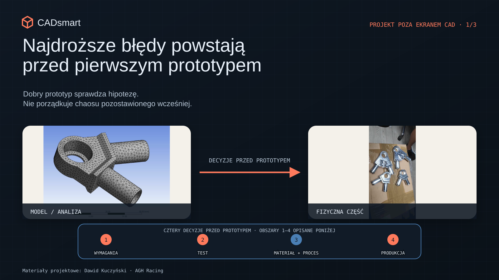
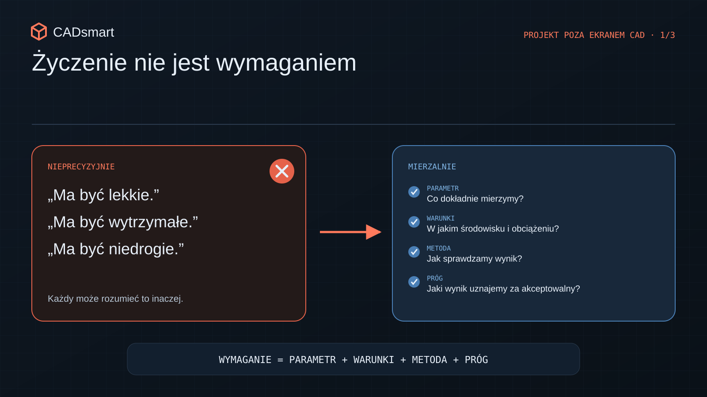
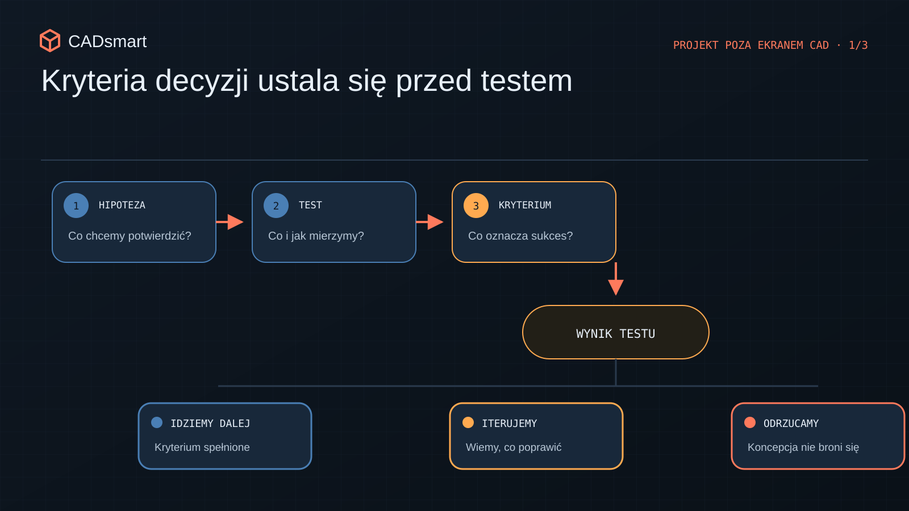
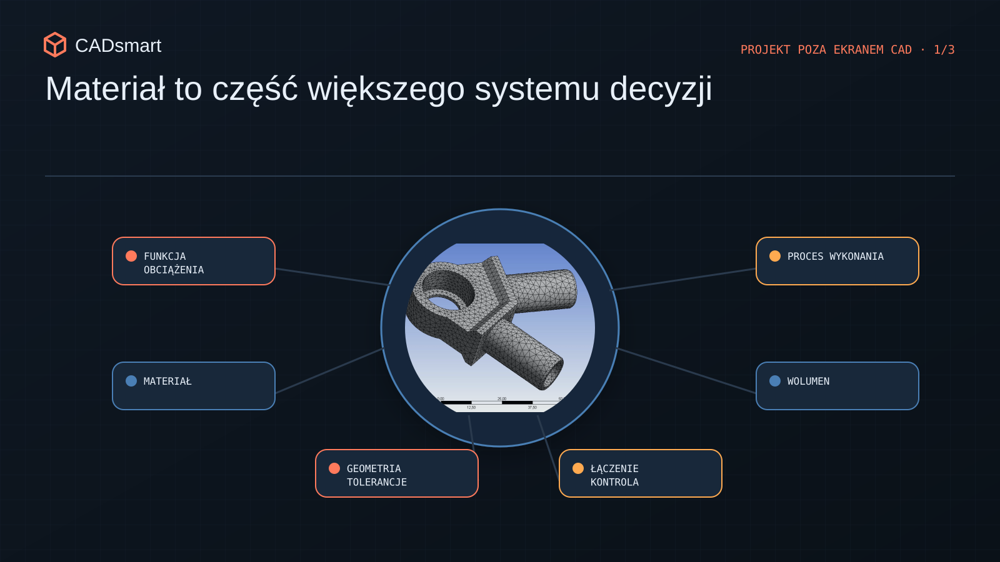
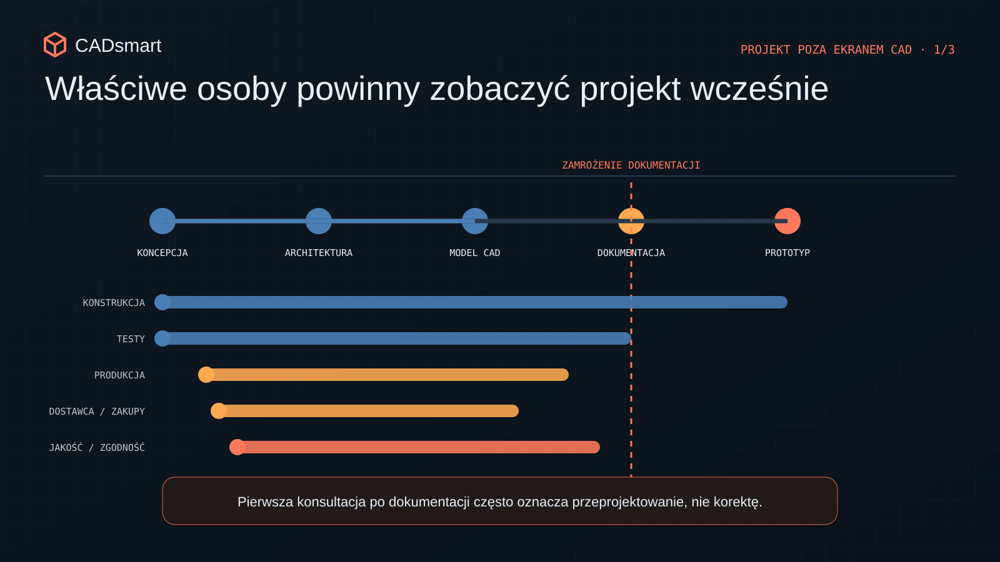

Najdroższe błędy powstają przed pierwszym prototypem
Jak doprecyzować wymagania, testy, materiały i realia produkcji, zanim projekt wejdzie w kosztowne iteracje prototypowe.
Zanim zamówisz pierwszy prototyp
Wyobraź sobie, że siedzisz nad projektem od kilku tygodni. Model wygląda porządnie. Mechanizm porusza się tak, jak powinien. Render też robi robotę. Zamawiasz więc pierwszy prototyp, rozpakowujesz paczkę i po pięciu minutach wychodzi, że część jest za ciężka, montaż wymaga trzech rąk, a „łatwe w obsłudze” każdy rozumiał trochę inaczej. No i zaczynają się schody.
Najdroższe błędy rzadko rodzą się przy frezarce albo podczas montażu. Zwykle pojawiają się dużo wcześniej, kiedy ktoś mówi: „ma być lekkie, wytrzymałe i tanie”, a reszta kiwa głową, jakby wszyscy właśnie ustalili to samo. Nie ustalili. CAD może być poprawny. Prototyp może wyglądać świetnie. A projekt i tak będzie się rozjeżdżał, bo zabrakło wspólnej odpowiedzi na kilka podstawowych pytań: co właściwie budujemy, w jakich warunkach ma to działać, jak poznamy, że działa dobrze i jak później chcemy to produkować.

Przed rozpoczęciem kosztownej zabawy warto więc ogarnąć cztery rzeczy: wymagania, kryteria testów, materiał razem z technologią oraz udział produkcji i dostawców. Nie chodzi o napisanie dokumentacji grubości książki telefonicznej. Chodzi o to, żeby wiedzieć, co jest decyzją, a co nadal tylko naszym przypuszczeniem.
1. „Ma być lekkie” to jeszcze nie wymaganie
„Wytrzymałe”, „łatwe w montażu”, „możliwie lekkie” i „niedrogie w produkcji” brzmią rozsądnie. Problem w tym, że są bardziej życzeniami niż wymaganiami. Weźmy samo „lekkie”. Konstruktor może pomyśleć: schodzimy z masą o 15 procent. Product Manager: da się to taniej wysłać. Użytkownik: przeniosę urządzenie jedną ręką. Jedno słowo, trzy różne produkty. I dopóki nie zamienimy tego słowa na coś, co da się policzyć albo sprawdzić, każdy będzie projektował trochę inną wersję tej samej rzeczy.

Drugi problem wychodzi zwykle później: wymagania zaczynają się ze sobą gryźć. Produkt ma być lekki, sztywny, tani, odporny na warunki zewnętrzne i gotowy najlepiej na wczoraj. Fajnie. Tyle że geometria nie zna magii, materiał nie czyta prezentacji sprzedażowych, a dostawca nie skróci procesu dlatego, że termin jest ambitny. Trzeba więc ustalić priorytety. Co jest naprawdę krytyczne? Z czego możemy zejść? Gdzie świadomie akceptujemy kompromis?
Dobry brief techniczny powinien dać zespołowi konkretne odpowiedzi:
- jaką funkcję produkt ma realizować i w jakich warunkach;
- które parametry są krytyczne, a które można negocjować;
- jaki koszt wytworzenia jest dopuszczalny i dla jakiego wolumenu;
- jakie mamy ograniczenia masy, gabarytu, transportu, zasilania i otoczenia;
- co oznacza „wystarczająco dobrze” dla pierwszej wersji.
I jeszcze jedno: budżet też jest wymaganiem technicznym. Jeśli od początku projektujemy część pod drogą technologię, ciasne tolerancje i mało dostępny materiał, to na końcu nie zrobimy „małej optymalizacji kosztowej”. Zrobimy drugi projekt. Tylko później, drożej i pod większą presją.
2. Najpierw ustal, co znaczy „działa”
Prototyp nie jest wyrocznią. To po prostu pytanie zadane rzeczywistości czasem dość drogie pytanie. Jeśli zadamy je mętnie, dostaniemy równie mętną odpowiedź. Najbardziej zdradliwe słowo po teście brzmi: „działa”. Co dokładnie działa? Jeden egzemplarz? Jeden raz? Na stole, w ciepłym pomieszczeniu, z człowiekiem, który zna wszystkie jego humory? To nadal może być dobry wynik, ale trzeba wiedzieć, co on naprawdę oznacza.

Dlatego kryteria akceptacji ustalamy przed testem, nie po nim. Zanim coś zbudujemy, powinniśmy wiedzieć:
- Czy rozwiązanie w ogóle realizuje swoją funkcję?
- Czy robi to w wymaganym zakresie i warunkach?
- Czy wynik jest na tyle powtarzalny, że możemy iść dalej?
To od razu porządkuje sposób budowania prototypu. Jeżeli sprawdzamy obciążenie i sztywność, nie potrzebujemy od razu powierzchni wyglądającej jak w produkcie seryjnym. Jeżeli badamy montaż, musimy odwzorować interfejsy, dostęp narzędzi i kolejność operacji. Jeśli porównujemy dwa warianty, oba trzeba sprawdzić tą samą metodą i w tych samych warunkach. Inaczej porównujemy jabłko z kluczem trzynastką.
W projektach przygotowywałem protokoły, raporty, kryteria akceptacji i oprzyrządowanie testowe. Największą wartością nie był sam dokument. Papier nikogo nie uratuje, jeśli nikt nie wie, po co robi test. Wartością było uzgodnienie przed próbą, czego chcemy się dowiedzieć i jaka decyzja zapadnie po wyniku. Wtedy test przestaje być wydarzeniem w harmonogramie. Zaczyna być narzędziem do podejmowania decyzji.
3. Materiał nie przychodzi sam. Przyprowadza całą technologię
Materiał często wybieramy z tabeli: wytrzymałość, sztywność, gęstość, temperatura pracy. To oczywiście ma znaczenie. Tyle że sam materiał nie załatwia sprawy. Razem z nim wybieramy sposób wykonania, tolerancje, metodę łączenia, wykończenie, kontrolę jakości, dostawców i sporą część kosztu. Krótko mówiąc: materiał przychodzi z całym bagażem. Tę samą funkcję może realizować element frezowany, gięty z blachy, odlewany, spawany albo wykonany z tworzywa. Każdy z tych procesów lubi inną geometrię i ma inne ograniczenia. Frezarka może bez marudzenia zrobić prototyp, który świetnie sprawdzi funkcję. Ale geometria dobra do frezowania nie musi mieć sensu jako odlew czy detal wtryskowy.

I tu łatwo wpaść w pułapkę: prototyp działa, wszyscy się cieszą, a kilka miesięcy później ktoś pyta, jak to właściwie wyprodukować w zakładanej cenie i liczbie sztuk. Nagle okazuje się, że sukces prototypu tylko przesunął przeprojektowanie na później. Pracując nad systemami złożonymi z tworzyw wtryskowych, blach, odlewów i części obrabianych, wielokrotnie widziałem, jak jedna decyzja materiałowa przechodzi przez cały produkt. Zmienia podparcie, połączenia, prowadzenie kabli, kolejność montażu, dostępność komponentów i plan testów.
Dlatego przy wyborze materiału warto patrzeć szerzej:
- jaką funkcję pełni część i jakie przenosi obciążenia;
- jaka będzie docelowa technologia i wolumen;
- jakie tolerancje da się realnie utrzymać;
- czy materiał i dostawcy są dostępni;
- jak część połączymy z resztą produktu;
- jak ją wykończymy, zabezpieczymy i będziemy serwisować;
- ile kosztuje całe rozwiązanie, a nie tylko kilogram materiału.
Cena surowca potrafi wyglądać pięknie w Excelu. Gorzej, gdy potem dochodzą narzędzia, dodatkowa obróbka, specjalne mocowanie i kontrola, której nikt wcześniej nie uwzględnił.
4. Produkcja nie jest komisją odbiorową na końcu projektu
Częsty scenariusz wygląda tak: konstrukcja jest już prawie gotowa, więc wysyłamy rysunki do dostawcy i pytamy o cenę. Dopiero wtedy wychodzi, że narzędzie nie ma dojścia, promień gięcia jest zbyt mały, detal trudno zamocować, a tolerancja kosztuje więcej niż cała reszta części. To nie znaczy, że dostawca ma projektować produkt za zespół. Chodzi o wcześniejsze zderzenie pomysłu z realnym procesem. Krótka konsultacja potrafi ujawnić problemy z oprzyrządowaniem, bazowaniem, kontrolą, terminem albo dostępnością materiału, zanim geometria zostanie uznana za świętą.
Podobnie jest z montażem. Na ekranie wszystko ma nieskończenie dużo miejsca. W warsztacie nagle okazuje się, że klucz nie wchodzi, przewodu nie da się poprowadzić, a ostatnią śrubę można dokręcić wyłącznie siłą woli.

Im wcześniej produkcja, dostawcy, zakupy i jakość zobaczą kluczowe założenia, tym taniej można zmienić kierunek. Na początku przesuwamy linię w CAD. Później zmieniamy dokumentację, zamówienia, narzędzia i terminy. To samo dotyczy bezpieczeństwa i zgodności z przepisami. Jeśli produkt ma wymagania dotyczące osłon, dostępu serwisowego, stateczności, temperatury, hałasu albo zachowania w razie awarii, nie są to ozdoby do dopisania przed premierą. One potrafią zmienić architekturę produktu.
Dlatego dobry przegląd projektu nie powinien polegać na tym, że konstruktor pokazuje gotowy model, a reszta mówi „ładny”. Warto wcześniej zebrać ludzi, którzy patrzą na produkt z różnych stron: projektowania, testów, produkcji, zakupów, jakości i serwisu. Każdy widzi inne ryzyko. I właśnie o to chodzi.
Prototyp ma sprawdzać hipotezy, a nie sprzątać bałagan
Nie da się usunąć całej niepewności przed pierwszym prototypem. I bardzo dobrze, po to budujemy prototypy, żeby się czegoś dowiedzieć. Iteracje nie są porażką. Są częścią rozwoju produktu.
Różnica jest tylko taka: możemy iterować świadomie wokół konkretnej hipotezy albo używać kolejnych prototypów do odkrywania, co właściwie chcieliśmy zbudować.
Przed rozpoczęciem modelowania i zamawianiem części warto mieć potwierdzone pięć rzeczy:
- krytyczne wymagania są mierzalne i wiadomo, kto za nie odpowiada;
- priorytety oraz kompromisy są jawne;
- wiadomo, co będziemy testować i po czym ocenimy wynik;
- materiał rozpatrzyliśmy razem z procesem, wolumenem i dostawami;
- produkcja, dostawcy i wymagania bezpieczeństwa pojawiły się w rozmowie odpowiednio wcześnie.
Jeśli to jest uporządkowane, pierwszy prototyp nie musi być piękny ani doskonały. Ma dać zespołowi informację potrzebną do podjęcia kolejnej dobrej decyzji. Tylko tyle, i aż tyle.
Rozwijasz produkt mechaniczny i chcesz sprawdzić, czy jego założenia są gotowe do przejścia w projekt lub prototyp? Mogę pomóc w przeglądzie wymagań, planu testów, architektury mechanicznej i ryzyk produkcyjnych, zanim kosztowne iteracje zaczną zjadać budżet i kalendarz.
Sprawdź swój projekt
Chcesz przełożyć wnioski z artykułu na własny projekt?
Rozwiń 9 pytań kontrolnych
- Czy dla każdej kluczowej funkcji określono mierzalny parametr, dopuszczalny zakres oraz warunki, w których ma zostać spełniony?
- Czy wymagania mają ustalone priorytety i wiadomo, z czego można zrezygnować, gdy masa, koszt, termin lub trwałość zaczną się ze sobą konfliktować?
- Czy założenia kosztowe odpowiadają planowanemu wolumenowi i obejmują narzędzia, montaż, kontrolę, odpady oraz wykończenie, a nie tylko cenę części?
- Jaką konkretną hipotezę ma sprawdzić prototyp i jaka decyzja nastąpi po wyniku pozytywnym, negatywnym lub niejednoznacznym?
- Czy plan testu określa konfigurację prototypu, warunki próby, mierzone wartości, dokładność pomiaru oraz jednoznaczne kryterium zaliczenia?
- Czy geometria, tolerancje, połączenia i sposób kontroli są osiągalne oraz ekonomicznie uzasadnione dla wybranego procesu produkcyjnego?
- Czy przeanalizowano skrajne kombinacje tolerancji oraz ich wpływ na montaż, luzy, docisk i działanie produktu?
- Czy produkt można zmontować, skontrolować i serwisować przy użyciu rzeczywistych narzędzi, w zaplanowanej kolejności i bez wiedzy dostępnej tylko konstruktorowi?
- Czy produkcja, jakość, zakupy i kluczowi dostawcy ocenili projekt, a ryzyka dotyczące dostępności, terminów, bezpieczeństwa i zgodności mają właścicieli oraz dalsze działania?
Chcesz zachować pytania na później?